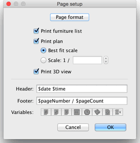
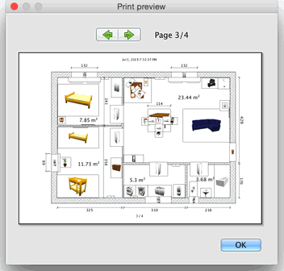

| Printing a home | |||
To print a home, choose File > Print.... By default, Sweet Home 3D prints the furniture list, the plan and the current 3D view of a home, using default paper
size, margins and orientation.  In the page setup pane, you may change paper size and orientation by clicking on the Page format button.
You can choose also if the furniture list, the plan and the 3D view of a home should be printed or not. If you don't
want to use the scale of the plan computed automatically to fit paper at best, you may choose an other scale in
the Scale field.
To avoid you typing the exact name of a variable, use the Variables buttons displayed under the Header and Footer text fields. As the $ sign is reserved for variables, you should use the $$ code to print a $ sign. Before printing your home, you may preview your page setup at screen, by choosing File > Print preview... out of the menu.  In the print preview pane, you can see how a home will be printed page by page. To change the previewed page, click on the arrows at the top of the pane or press the arrow keys. |
|